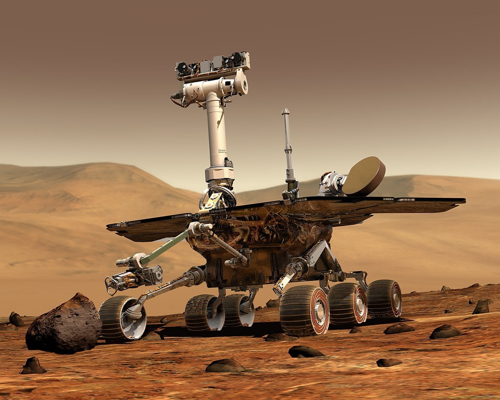
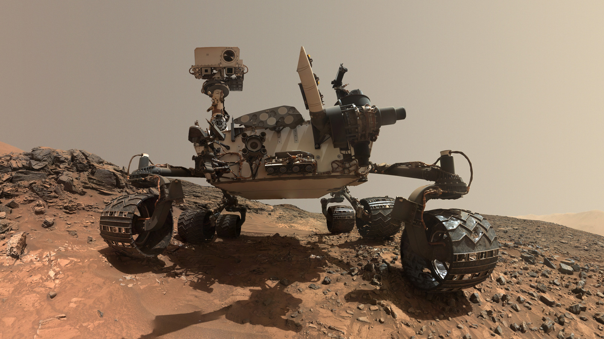
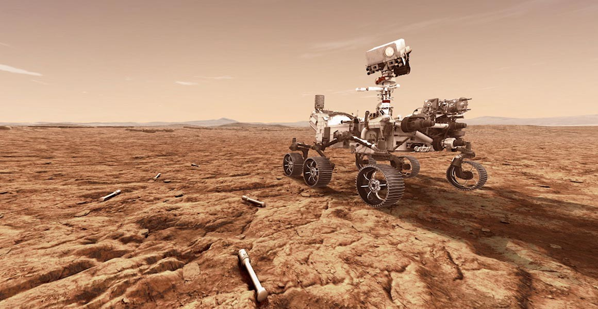
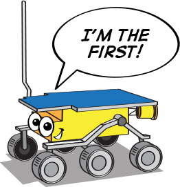
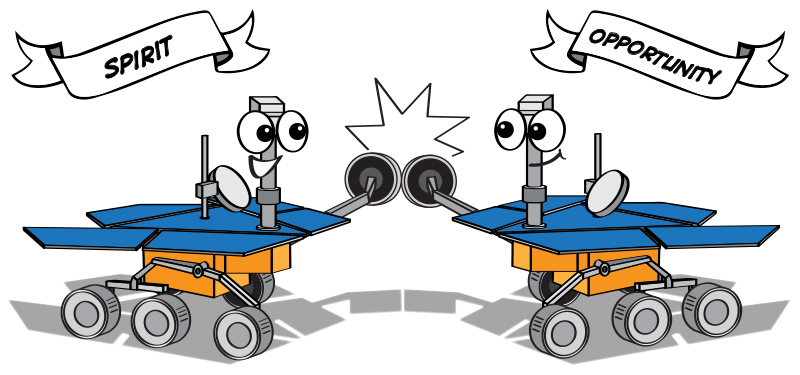

Note
Hello, welcome to the SunFounder Raspberry Pi & Arduino & ESP32 Enthusiasts Community on Facebook! Dive deeper into Raspberry Pi, Arduino, and ESP32 with fellow enthusiasts.
Why Join?
Expert Support: Solve post-sale issues and technical challenges with help from our community and team.
Learn & Share: Exchange tips and tutorials to enhance your skills.
Exclusive Previews: Get early access to new product announcements and sneak peeks.
Special Discounts: Enjoy exclusive discounts on our newest products.
Festive Promotions and Giveaways: Take part in giveaways and holiday promotions.
👉 Ready to explore and create with us? Click [here] and join today!
Lesson 1 Unveiling the Mars Rover
Welcome to Lesson 1: Understanding the Mars Rover. Today, we dive into the thrilling world of Mars rovers—our remote explorers on the Red Planet. We will learn about their evolution, their functions, and the technological marvels that they are. Furthermore, you’ll channel your creativity to design your own rover and hone your presentation skills by explaining your unique design. Get ready to explore Mars from your classroom!
Learning Objectives
Gain an understanding of the evolution and purpose of Mars rovers
Express creativity by designing your own Mars rover
Enhance presentation skills by sharing and explaining your rover design
Materials
Mars Rover images and technical specifications for reference
Documentary video on the history of Mars rovers
Computer with internet access for research and viewing documentary
Presentation slides or interactive whiteboard for lesson delivery
Drawing paper, pencils, and coloring materials for rover design activity
Worksheets for guided note-taking, reflection, and design planning
Steps
Step 1: What are Mars Rovers?
Before we dive into Mars rovers, let’s first acquaint ourselves with Mars itself. As we can see from the images and models, the surface of Mars is marked with craters, mountains, valleys, and dust storms, painting a picture of a landscape that is both fascinating and challenging.
{kind=link}
{kind=link}
Can you imagine what it would be like to navigate through such a rugged terrain? Now, suppose you have the task of designing a rover for Mars.
What considerations will you keep in mind given the terrain and conditions of Mars?
What features will you equip it with to ensure it can perform its functions effectively?
What tasks do you envision your Mars rover would need to accomplish?
Remember, a Mars rover is a robot designed to explore Mars, study its environment, and send data back to Earth. So think about aspects such as movement, communication, power supply, scientific research capabilities, and durability under Mars’ extreme conditions.
Let’s take a moment to brainstorm and share our ideas. It’s interesting to think like engineers and scientists, isn’t it? We’ll delve deeper into actual Mars rover designs and their functions in the following steps, so keep your creative ideas in mind as we progress.
Step 2: Exploring the History of Mars Rovers
Next, we’ll embark on a journey through time by watching a documentary that details the history of Mars rovers. The documentary takes us from the first attempt at deploying a rover on Mars, the Soviet Mars 3 rover which unfortunately didn’t succeed upon landing in 1971, to NASA’s first successful Mars rover, Sojourner, in 1997.
Our journey doesn’t stop there, as we venture further to understand the adventures of the most advanced rovers yet: Spirit, Opportunity, Curiosity, and Perseverance.
This documentary not only presents a historical context but also provides a comprehensive understanding of the progressive scientific and engineering milestones that have led to the current Mars exploration era.
Step 3: Summarize the Mars Rovers
After watching the documentary, let’s summarize the different Mars rovers that have been sent on the red planet.
Sojourner (1997)
Sojourner, the pioneer of Mars rovers, embarked on its journey as a part of the Mars Pathfinder mission. It made a successful landing in the Ares Vallis region on July 4, 1997. As the first wheeled vehicle to roam on a planet other than Earth, Sojourner marked a significant milestone in Martian exploration. Although it was operational on Mars for only 92 Martian days, or sols, it set the groundwork for future exploratory rovers.

Spirit (2004–2010) and Opportunity (2004–2018)
Spirit and Opportunity are twin rovers of NASA’s Mars Exploration Rover (MER) mission. Spirit, also known as MER-A, operated on Mars from 2004 to 2010.
On the other hand, Opportunity, or MER-B, had a remarkably long run from 2004 to 2018. Together, they greatly expanded our understanding of the Martian surface and geological history.

Curiosity (2012–present):
Curiosity, a car-sized Mars rover, was designed to explore the Gale crater on Mars as part of NASA’s Mars Science Laboratory (MSL) mission. Since its arrival in 2012, Curiosity has made numerous significant discoveries, including evidence of past liquid water on Mars.

Perseverance (2021–present):
Perseverance, also known as Percy, is the most recent rover to arrive on Mars. It’s designed to explore the Jezero crater as part of NASA’s Mars 2020 mission. Along with its scientific instruments, Perseverance also carries Ingenuity, a small experimental Mars helicopter, marking another first in Martian exploration.

Now, let’s have a discussion. Reflect on the evolution of these rovers.
How do the designs of these rovers differ? How are they similar?
How did the mission objectives influence the design of each rover?
What advancements in technology can you identify between each rover?
What features do you think the next Mars rover should have?
Share your thoughts and reflections, as well as any questions you might have!
Step 4: Art Activity: Draw Your Own Mars Rover

{kind=link}

For our next activity, let’s put our knowledge and creativity to work by designing our very own Mars rover. Consider the key characteristics of the rovers we’ve studied so far, but also think about the unique attributes you would want to incorporate in your design.
Materials you’ll need:
Drawing paper
Pencils and erasers
Colored pencils, crayons, or markers
Drawing Instructions:
Start with the body of the rover. What shape will it be? How large?
Consider the wheels. How many will your rover have? What size and shape will they be?
Don’t forget about the instruments. What scientific equipment will your rover carry? Cameras, drills, spectrometers, or something entirely new?
Lastly, consider any unique features. Does your rover have solar panels, or does it use a different power source? Can it communicate directly with Earth, or does it need a relay satellite?
Once everyone has completed their drawings, we’ll share them with the class. Explain your design choices and the mission you envision for your rover.
Step 5: Present Your Mars Rover Designs
Now that everyone has completed their Mars Rover drawings, it’s time to share them! As you present, discuss the thought process behind your design. What is your rover’s mission? How does the design support this mission?
Remember, there are no wrong answers in this activity. The purpose is to stimulate your creativity and deepen your understanding of Mars rover technology.
Step 6: Reflection and Conclusion
As we conclude our Mars Rover lesson, let’s take a few minutes to reflect on what we have learned. How do our rover designs reflect the advancements in technology and scientific objectives? How might the real Mars rovers continue to evolve in the future?
Remember, the exploration of space, like any STEAM field, is all about asking questions, solving problems, and using creativity. Keep exploring, keep asking questions, and keep being curious!